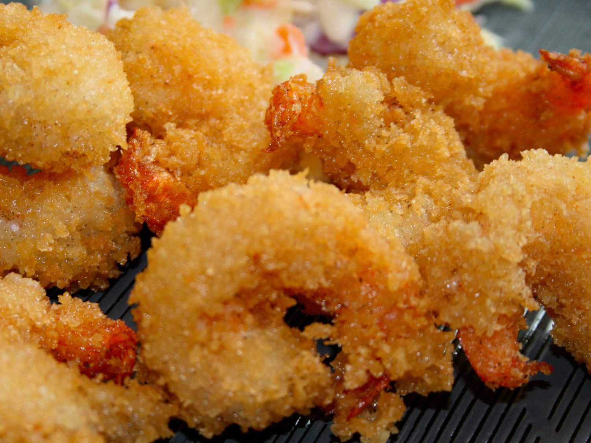

Fried Shrimp

Description
These shrimp will knock your socks off! The batter doesn't overcoat the shrimp, which helps it maintain a wonderful flavor! Enjoy!
Ingredients
- 1 pound large shrimp, peeled and deveined and butterflied
- 1 quart water
- 1 ½ cups cornstarch
- 2 eggs
- 2 cups fresh bread crumbs/li>
- 5 cups oil for deep frying
Directions
- Preheat deep fryer or skillet with oil to 350 degrees F (175 degrees C).
- Dip the shrimp into the mixture allowing them to be completely coated. Then roll the shrimp in the breadcrumbs. Coat the shrimp well with the breadcrumbs. Mix up the cornstarch batter again. Dip the breadcrumbs coated shrimp back into the cornstarch batter. Roll the shrimp in the breadcrumbs for a second time. Repeat for each shrimp.
- Drop shrimp, one at a time, into the hot oil and cook shrimp until they are golden brown.
- Set aside on paper towels to drain oil.
- Serve and enjoy!
Back to Recipes